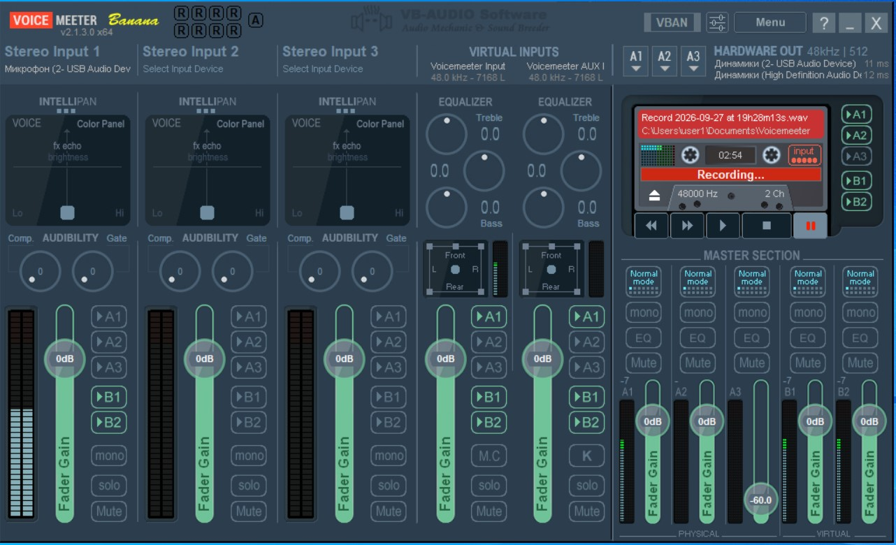
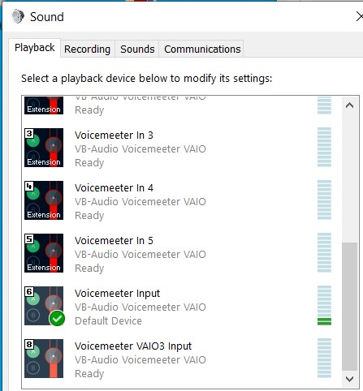
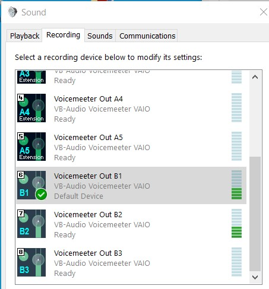
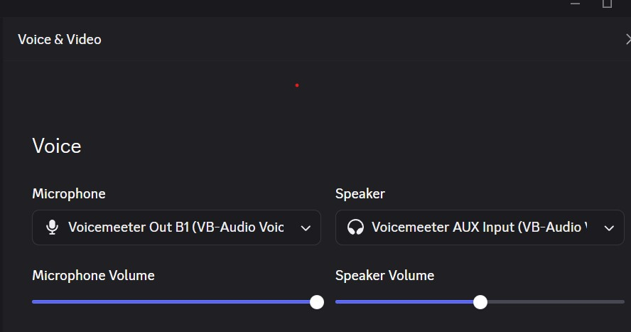
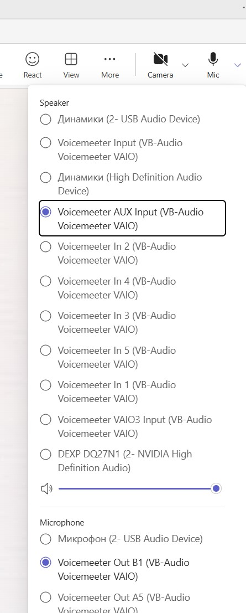
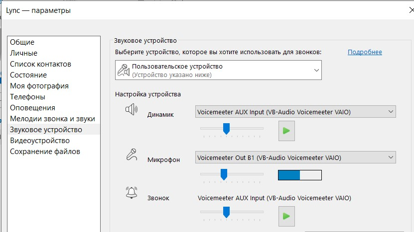
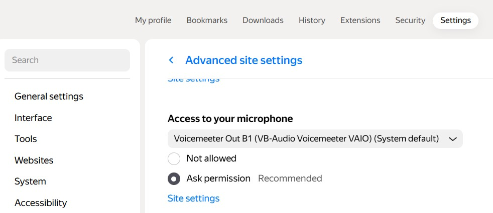
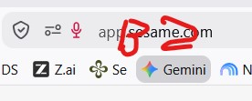

Данное руководство поможет вам правильно настроить маршрутизацию звука в виртуальном микшере VoiceMeeter Banana, операционной системе Windows, мессенджерах и браузерах.
Для корректной работы микрофона, воспроизведения звука и виртуальных шин выставьте основные параметры микшера:
Микрофон (2- USB Audio Dev)).
Перейдите в классическую панель управления звуком Windows (Control Panel -> Sound):
Установите устройство VoiceMeeter Input (VB-Audio VoiceMeeter VAIO) в качестве устройства по умолчанию (Default Device).

Установите устройство VoiceMeeter Out B1 (VB-Audio VoiceMeeter VAIO) в качестве микрофона по умолчанию (Default Device).

Voicemeeter Out B1 (VB-Audio VoiceMeeter VAIO)Voicemeeter AUX Input (VB-Audio VoiceMeeter VAIO)
Voicemeeter AUX Input (VB-Audio VoiceMeeter VAIO)Voicemeeter Out B1 (VB-Audio VoiceMeeter VAIO)
Voicemeeter AUX Input (VB-Audio VoiceMeeter VAIO)Voicemeeter Out B1 (VB-Audio VoiceMeeter VAIO)Voicemeeter AUX Input (VB-Audio VoiceMeeter VAIO)
По умолчанию для браузерных веб-сервисов и звонков используется Яндекс Браузер (или другие браузеры на базе Chromium).
В настройках прав и разрешений микрофона выберите Voicemeeter Out B1 (VB-Audio VoiceMeeter VAIO).

В адресной строке или настройках доступа к микрофону сайта выбирайте виртуальный канал B2.
